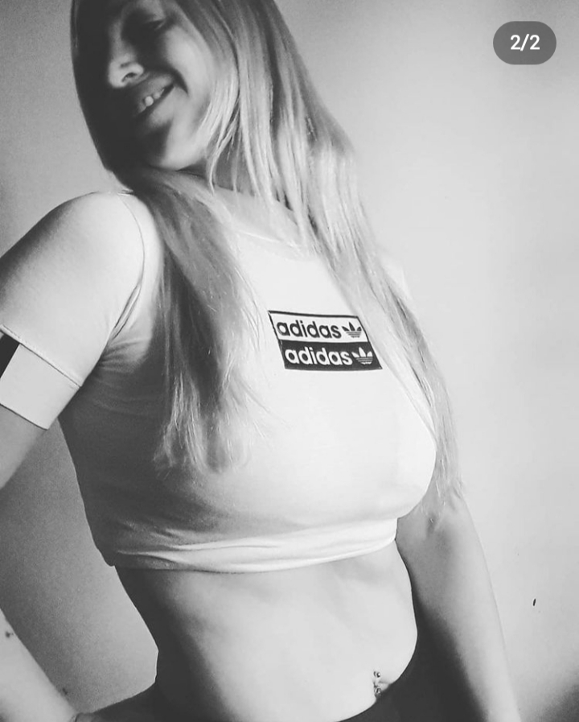
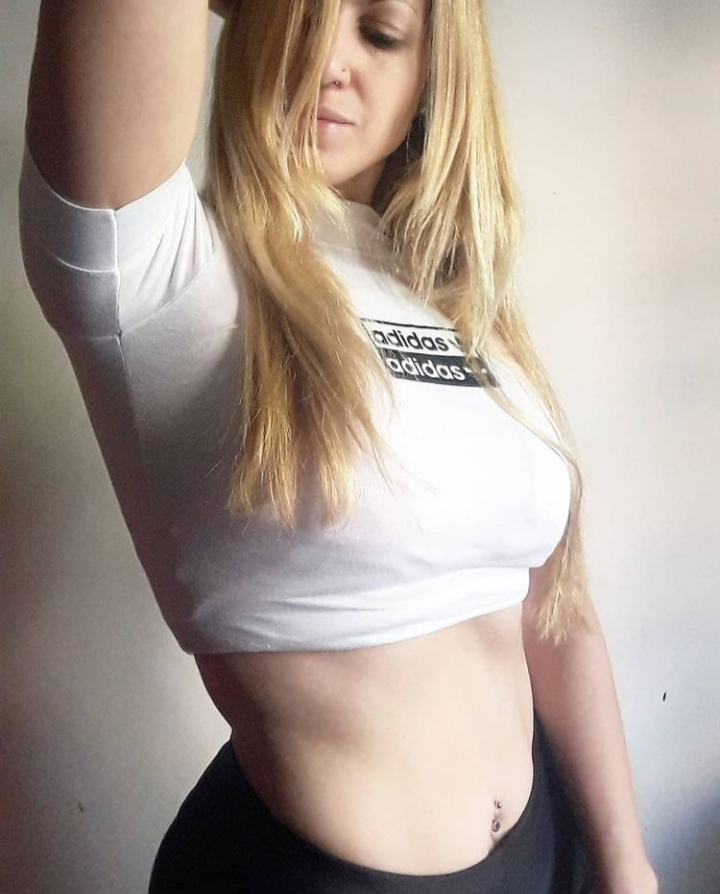

Planes
Aquí encontrarás todos nuestros planes de alimentación basados en un estilo de vida saludable, elegí el que más se ajuste a tus objetivos
PLAN DEFINICIÓN
Si estás buscando bajar grasa corporal y definir tus músculos, acompañado de actividad física, este plan es para vos VER PLAN
PLAN HIPERTROFIA
Si estás en tu peso y tus objetivos es aumentar masa muscular o necesitás subir de peso, este plan es para vos VER PLAN
PLAN HÁBITOS SALUDABLES
Si sos una persona que busca cambiar sus hábitos alimentarios, se encuentra desordenada en las comidas y quiere aprender a comer mejor con cambios sostenibles, este plan en para vos VER PLAN

PLAN LOW CARBS
Si sos una persona que hace tiempo viene ordenada en las comidas, suele realizar actividad física y manejás bien la ansiedad este plan puede servirte, conocé más si se adapta a tu situación MÁS INFO
PLAN VEGETARIANO
Este plan es vegetariano, es decir, para personas que no consumen carnes ni sus derivados. Si llevás esta alimentación o estás comenzando en este mundo, este plan es para vos MÁS INFO

PLAN AYUNO INTERMITENTE
Si alguna vez escuchaste hablar sobre el ayuno intermitente o querés adentrarte en el tema, podés ver más información en este plan, el cual te orientará en todo lo que necesites saber VER PLAN
Aclaración
*Todos los planes incluyen seguimiento semanal durante un mes, el que luego podés renovar para seguir progresando o seguir realizando el mismo sin seguimiento. Están diseñados con una base general, podrás personalizarlos al hablar con la nutricionista sobre tu situación y verá si se debe ajustar cierta cantidad de algún alimento o reemplazar alguna comida, esto es de forma opcional, de lo contrario podés realizar directamente el plan. Para más información ingresá en cada plan y encontrarás todo lo que necesitás saber